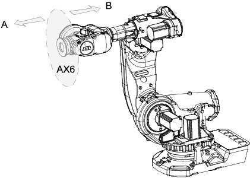

工具是能够直接或间接安装在机器人转动盘上，或能够装配在机器人工作范围内固定位置上的物件。
固定装置（夹具）不是工具。
所有工具必须用TCP（工具中心点）定义.
为了获取精确的工具中心点位置，必须测量机器人使用的所有工具并保存测量数据。
 | 警告 重要的是，始终定义实际工具负载以及使用时机械臂（例如，抓取部分）的有效负载。负载数据定义不正确可能会导致机械臂机械结构过载。 指定不正确的负载数据时，其常常会引起以下后果：
控制器持续监测负载，如果负载高于预期则写入事件日志。事件日志存储和记录都在控制器存储器中。 |

A | 工具侧 |
B | 机器人侧 |